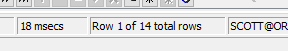

학습목표
나는 테이블의 구성요소를 말할수 있다
컬럼중에 pk가 필요함을 이해한다
제약조건에 대해 설명할수 있다
실습제목
자기가 설계한 회원집합을 ER-WIN이라는 툴을 설치해서 ERD작성해보기
ERD(entiety relation diagram)
개체의 관계를 그림으로 도식화한것
ERD를 작성할수 있도록 제공되는 툴이 ER-WIN이다
설치순서
오라클설치-토드설치-ER-WIN설치
CAEDM73 관리자권한 실행
select - 조회하는 명령어 + 컬럼명(ename, sal,,,,) + from( + emp;
select + *(전부 보여달라) + from + emp;
☆ sqlplus @192.168.0.235:1521:orcl11 ☆
토드
표처럼 보여준다(가독성이 상승)
가로 row
집합의 수(ex; 사람의 수)
 로우의 총 합
세로 컬럼
정보의 가짓수
표 => 테이블 table (table안에는 row와 column이 존재한다)

빈칸은 알수없음의 표시 아직 정해져있지 않다. 모른다.
빈칸 = null
mgr 그룹코드 사원이 근무하는 부서안의 그룹(부서안의 지원그룹 종류)
pk = 사원번호 empno 핵심키 기본키 테이블안에는 반드시 존재(컬럼중에 하나 선정된다)
구성할수 있는 키가 두개 이상일수 있다. 정보가 중복되면 안된다.

null - N는 값이 반드시 있어야 한다.
pk옆의 1은 pk라는 표시
전화번호의 010은 미리 문자로 입력한다.
ERWIN
NEW-MODEL TYPE(Logical/Physical)
entity(테이블)
관계형태
1:1
1:n
n:n
1:1은 현재 상태의 관계만 나타낼수 있다
1:n은 이력을 남길수 있다
n:n
행위엔티티 관계사이에 일어나는 일
n:n은 반드시 1:n의 관계를 껴줘야한다
컬럼이 추상적일때는 속성. 테이블은 추상적일때 개체
타입 | 칸수 | |
숫자 (정수) | number(5) | 5 |9|9|9|9|9| |
숫자 (실수) | number(7,2) 소수점 2자리까지 | 7 |9|9|9|9|9|,9|9| |
문자 | varchar2(5) 남는 공간은 반납 ☆사용 | 5 |h|i|!| |
문자 | char(5) 남는 공간도 그대로 남겨둔다 | 5 |h|i||!| | | |
제약조건 not null같은 것
pk에는 index가 존재한다
trigger 데이터값을 변경할수 없게 설정하는 것

타입 확인 보는 방법 ER WIN
1
2
3
4
5

6

7
변수는 2개의 정보를 담을수 없다
그러나 2개 이상의 정보를 나타내기 위해서 필요한게 배열
배열의 단점을 보완해주는 것이 ArrayList
배열은 같은 타입만 담을수 있다
int[]i=800; []->배열
변수 선언을 하고 값을 넣는 것을 초기화 라고 한다.
클래스 만드는 과정
- java project 만들기
- src안에 패키지 만들기
- 패키지 안에 클래스 만들기
실습
사원이름을 담을 수 있는 변수 선언하기
- 선언하기
- 초기화 (하는 연산자 =)
- 사용
oracle | java | |
문자 | varchar2 | string |
숫자 | number(5) | int |
ln을 붙이면 줄을 바꿔준다
오라클에서 변수를 담당하는 부분은? 컬럼
오라클 구성 : 컬럼 인덱스 pk 테이블 로우
select empno,ename FROM emp
where ename='SMITH'
결과

package com.ch2;
public class Variable1 {
public static void main(String[] args) {
// TODO Auto-generated method stub
String a;//smith를 담기
//초기화에는 대입 연산자 = 가 필요하다
a="KING";
System.out.println("SMITH");
System.out.println(a);//"SMITH"가 출력된다
}
}
출력값

syso + ctrl+space 하면 System.out.println(a) 바로 출력
주소번지
문자 출력
package com.ch2;
public class Variable1 {
public static void main(String[] args) {
// TODO Auto-generated method stub
String a;//smith를 담기
//초기화에는 대입 연산자 = 가 필요하다
a="KING";
System.out.println("SMITH");
System.out.println(a);//"SMITH"가 출력된다
}
}
long와 inr의 크기차이 인식하기
package com.ch2;
public class P49 {
public static void main(String[] args) {
//sal number(7,2)
int sal = 800;
long i2;
long l = 500L;
//i2 = 500L;
//long숫자 뒤에 l을 붙이는 이유는 int의 수용범위를 벗어났을때. 안붙이면 int로 인식한다.
//수용범위를 벗어나면 오류가 나온다
//다르게 표현해보기?
i2=l;
System.out.println(i2);
//아래의 문제는?
float sal2 = 800.6f;//800.6=> 800.6d
//f를 안붙이면 double로 인식해서 오류가 난다
System.out.println(sal2);
System.out.println(sal);
}
}
int의 연산중 문자인식하는 경우
package com.ch2;
public class p49_1 {
public static void main(String[] args) {
int i = 5;
int j = 10;
System.out.println("i:"+i);//5
i=j;
System.out.println("i:"+i);//10
System.out.println(i+j);//20
//int+int=int
//int+string=string
//"10"은 문자로 인식한다.
//int-int=int
//int/int=int
//int*int=int
System.out.println(""+i+j);//1010 ""때문에 뒤에 숫자는 붙여쓰기로 나열된다.
System.out.println(""+(i+j));
int x = (int)3.14;//강제 형전환
System.out.println(x);
}
}
int를 나누는 것과 double로 나누는 것의 차이
package com.ch2;
public class p49_2 {
public static void main(String[] args) {
int jumsu1=80;
int jumsu2=85;
int jumsu3=100;
//평균 구하기 (80+90+100)/3;
//3으로 나누면 소숫점 이하는 출력이 안된다
int total=jumsu1+jumsu2+jumsu3;//270
int avg=total/3;
double avg2=total/3.0;
System.out.println("avg:"+avg); //88
System.out.println("avg2:"+avg2); //88.3333333
}
}
float와 double의 크기 차이
package com.ch2;
public class p49_3 {
public static void main(String[] args) {
float f1 = 3.14f;
double d1 = 3.14d;
f1=d1; //에러
d1=f1; //정상
//8번이 에러인 이유는 왼쪽보다 오른쪽이 크기때문에 수용이 불가능하다
//9번은 왼쪽이 오른쪽보다 크기에 수용이 가능하다
//byte<short<int<long<float<double
}
}
숫자와 문자타입의 에러
package com.ch2;
public class p49_4 {
public static void main(String[] args) {
int i = 10;
String s = "이순신";
i=s;//에러 이유에 대해 말해보자. 앞은 숫자타입인데 뒤에는 문자타입이라서
}
}